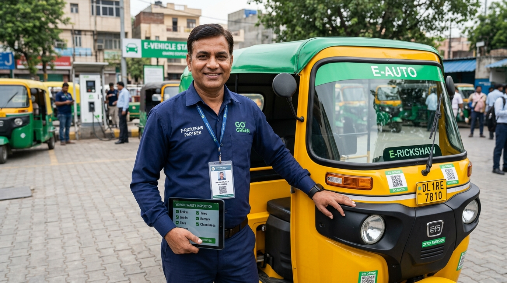
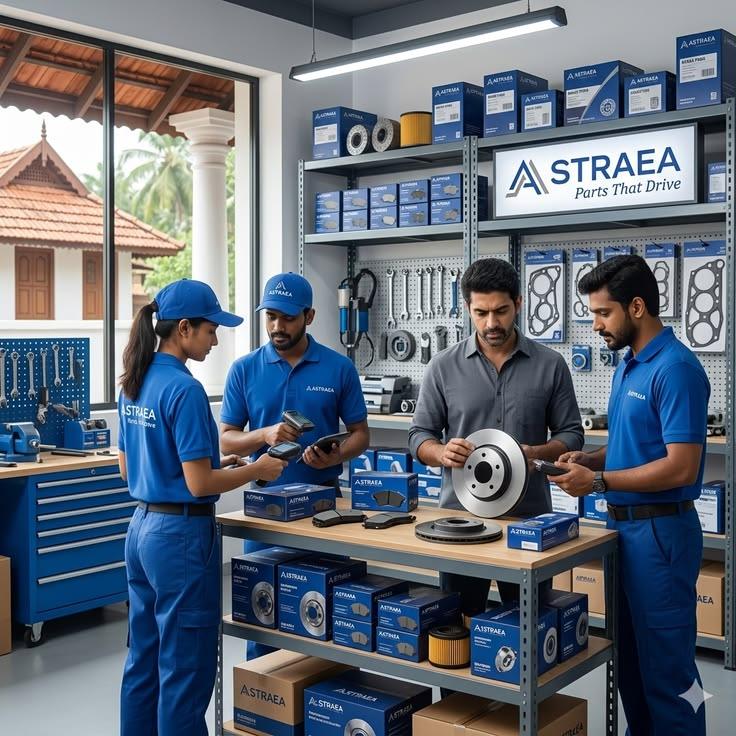
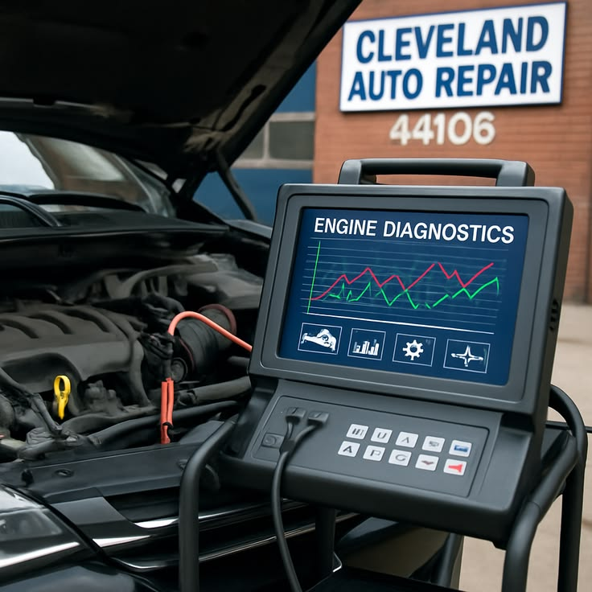
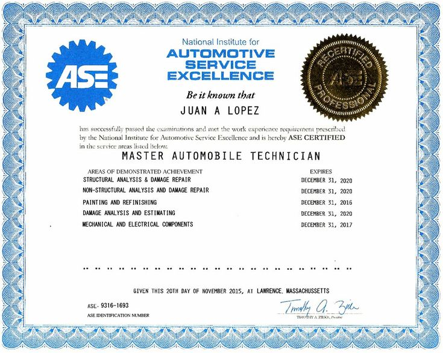
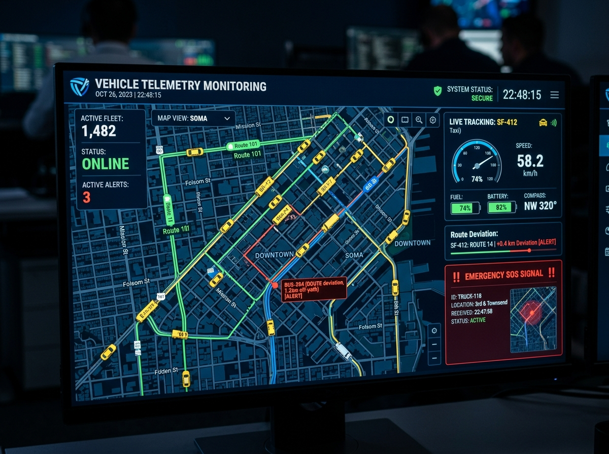
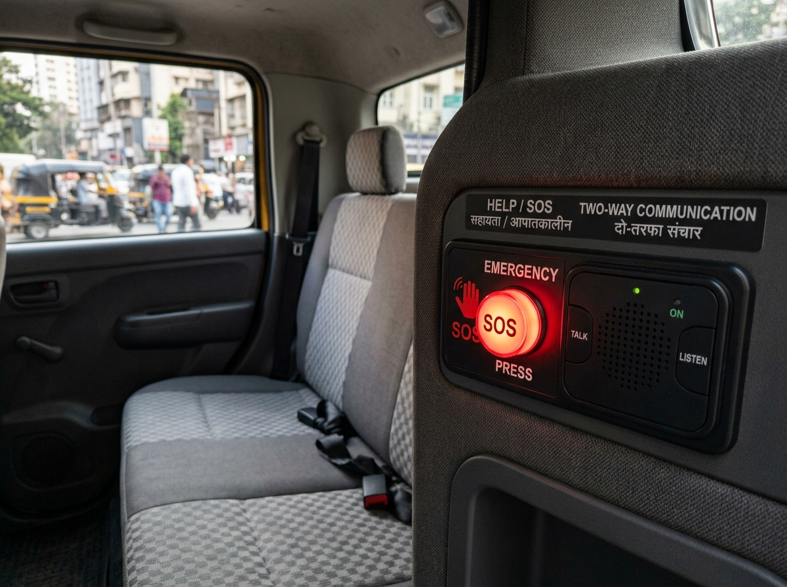
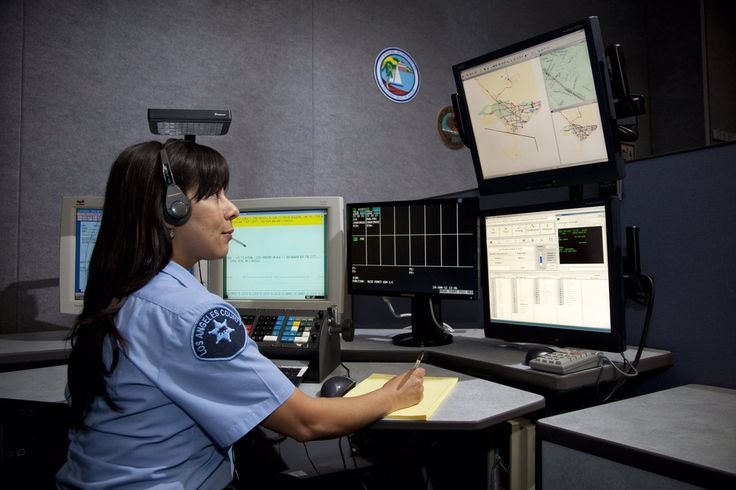

Comprehensive Safety & Driver Verification
Your physical safety is our paramount responsibility. Every driver operating under the AutoRik banner is certified through law enforcement background checks, biometric registration, and continuous vehicle safety inspections.
The 4-Stage Driver Verification Pipeline
No driver is permitted to accept passenger dispatches without completing every mandatory audit step.

Police Clearance Record
Comprehensive criminal history screening conducted directly with city police records.

Mechanical & RTO Audit
Mandatory inspection of brakes, tires, rain curtains, and RTO commercial roadworthiness permit.

Tamper-Proof Meter Sync
Digital meter calibration sealed and synchronized with GPS satellite distance calculation.

Behavioral Sensitivity
Mandatory training on passenger etiquette, safe defensive driving, and female traveler safety.
In-Trip Telemetry & Emergency Command
Continuous vehicle telemetry stream active throughout every metered journey with instant law enforcement escalation.

LIVE SATELLITEAutomated Route Deviation Alarm
Intelligent geofencing algorithms calculate expected transit corridors in real-time. Central dispatch is automatically flagged if a vehicle veers more than 500 meters off-route.

EMERGENCY HOTLINKIn-Cabin & App Panic Trigger
Physical tactical buttons in the passenger cabin and single-tap digital app triggers activate live encrypted two-way audio to the emergency command desk instantly.
City Patrol Intercept & Broadcast
Live GPS coordinates, vehicle registration number, and driver identity are instantly broadcast to the nearest city police cruiser and your designated emergency family contacts.
Dedicated Late-Night & Female Commute Shield
Enhanced security safeguards active on all journeys booked between 8:00 PM and 6:00 AM.
Premier Night Drivers Only
Only drivers with over 500 completed rides and spotless 4.9+ safety ratings are dispatched for nighttime trips.
Direct Police Control Sync
Dedicated hotlink directly to city patrol cruisers enables emergency intercept response in under 4 minutes.
Doorstep Arrival Verification
Drivers are mandated to remain stationed with headlights on until the passenger safely steps into their building premises.
Ride with Verified Trust or Verify Your Driver Badge
Have questions about safety protocols or need immediate assistance? Our dispatch security team is active 24/7/365 to support every journey.
